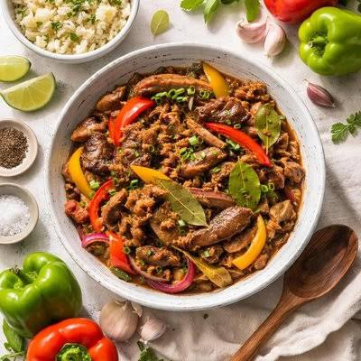

Igado

Pork Igado is a traditional Filipino dish that originated in the Ilocos Region of Northern Philippines. It has been part of Ilocano cuisine for many years and is known for its use of pork, liver, and vegetables. The name Igado comes from the Spanish word “hígado,” which means liver.
Ingredient
- ½ kg pork shoulder, cut into strips
- ½ kg pork liver, cut into strips
- 2 tablespoons soy sauce
- 1 sachet oyster sauce
- 2 pieces bay leaves
- ½ teaspoon ground pepper
- 1 tablespoon cooking oil
- 1 head garlic, minced
- 3 onions, sliced
- 4 tomatoes, sliced
- ¼ cup sukang Iloko
- 1 potato, sliced
- 1 carrot, sliced
- 2 bell peppers, sliced
- ½ cup green peas
- 1 sachet seasoning powder
- Water, as needed
Step-by-Step Process
1. Marinate the pork. Mix the pork with soy sauce, oyster sauce, pepper, and bay leaves. Set aside.
2. Cook the pork fat and aromatics. Simmer the pork fat in water until the water dries up. Add oil and cook until golden brown. Sauté the garlic, onions, and tomatoes.
3. Cook the pork. Add the marinated pork and cook for a few minutes. Pour in enough water to cover the meat, then cover and simmer until tender.
4. Prepare the liver. Marinate the pork liver in sukang Iloko.
5. Add the vegetables. Put the potato, carrot, and bell peppers into the pan. Continue cooking until tender.
6. Finish the dish. Add the liver, green peas, and seasoning powder. Simmer until the liver is cooked, then transfer to a serving plate.